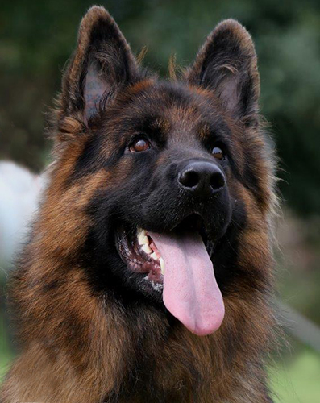

1.Ancestry

Paleontologists and archaeologists have determined that about 60 million years ago a small mammal,
rather like a weasel, lived in the environs of what are now parts of Asia. It is called Miacis,
the genus that became the ancestor of the animals known today as canids: dogs, jackals, wolves,
and foxes. Miacis did not leave direct descendants, but doglike canids evolved from it.
By about 30 to 40 million years ago Miacis had evolved into the first true dog—namely,
Cynodictis. This was a medium-size animal, longer than it was tall, with a long tail and a fairly brushy coat.
Over the millennia Cynodictis gave rise to two branches, one in Africa and the other in Eurasia.
The Eurasian branch was called Tomarctus and is the progenitor of wolves, dogs, and foxes.
2.Domestication
It is likely that wild canids were scavengers near tribal campsites at the same time that ancient humans
discovered a hunting partner in the animals that ventured close by. In ancient Egypt, dogs were thought
to possess godlike characteristics. They were pampered by their own servants, outfitted with jeweled collars,
and fed the choicest diet. Only royalty was permitted to own purebred dogs, and upon the death of a ruler
his favourite dog was often interred with him to protect him from harm in the afterlife.
3.Physical Traits And Functions

Dogs come in a wide range of shapes and sizes. It is difficult to imagine that a large Great Dane and
a tiny poodle are of the same species, but they are genetically identical with the same anatomic features.
All dogs have 78 chromosomes, or 39 pairs of chromosomes (humans have 23 pairs), and one member of each pair
comes from each parent. The normal temperature (rectal) of an adult dog is 100–102.5 °F.